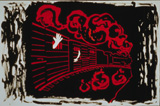

|  |
Robert O. Fisch, MD Painting with train: “I heard the news; I trembled and became speechless.” |
Light From the Yellow Star: A Lesson of Love From the Holocaust
August 28 - October
24, 1999
Harold and Mickey Smith Gallery of Jewish Art and Culture and Harrison
Photography Gallery Lobby
This installation of seventeen paintings and prose by local artist Dr. Robert O. Fisch, born in Budapest, Hungary in 1925, is a narrative of his experience in a Nazi concentration camp and a testament to the triumph of hopefulness over human suffering. This exhibition ties into a community-wide recognition of the accomplishments of the Swede Raoul Wallenberg. Wallenberg arranged for the rescue of tens of thousands of Hungarian Jews from the hands of the Nazis during the Second World War.